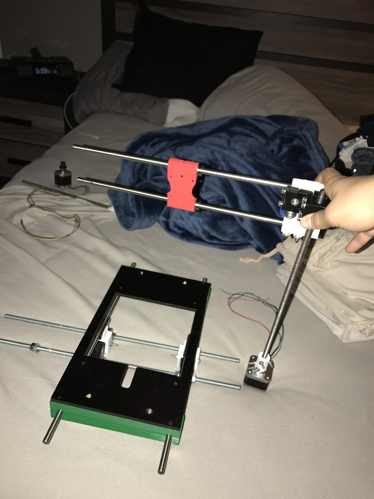
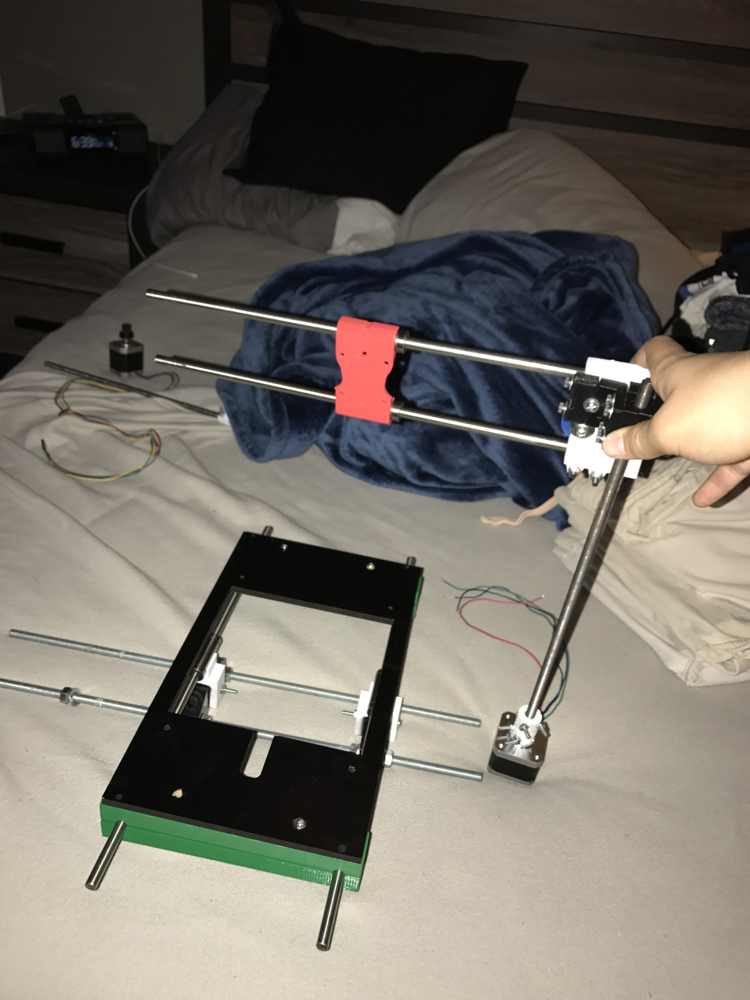

-

The
Noah Dorfman
Project
Base Plate Frame and Z-Axis Rods
Y-Axis Motor with Threaded Rod
X-Axis and Y-Axis Carriage
Final Preparations Prior to Combining the Three Axes
Revision of Y-Axis Design
Bring Out the Power Tools for Frame Assembly
Wooden Ladder Frame Design
X and Y Axes Installed on Frame
Heated Printing Bed Installed and Wires Managed
RAMPS Controller Board Installed with Secondary Ladder Frame


 



The Z-axis rod clamps were 3-D printed using my own original design. They were tightened around the two rods. The black baseplate frame was salvaged from an older 3-D printer. The frame was bolted to the clamps to create the z-axis carriage.
The threaded rod was inserted into a 3-D printed axis coupler. The opposite end of the coupler hugged the drive shaft of the stepper motor. Both ends of the coupler were tightened.
The dual purposed pieces are assembled using a mostly salvaged axis and 3-D printed pieces. A threaded hole end cap allows the axis to move vertically, while the stepper motor and belt move horizontally.
The three axis mock-ups were positioned while final estimations were made. "Measure twice, cut once" is every engineer's motto. Some minor adjustments were made to the original plans.
In structural integrity testing, flexion was observed in the threaded y-axis rod. An additional y-axis rod, motor, and coupler unit was added to the opposite side for stabalization.
Safety measures are always considered in the workshop. Safety glasses are worn and a workshop buddy is present in case of emergency. These are especially considered when using power tools.
The first part of the frame consists of two pieces of 2x2 cut to the same length, with three holes bored in each to support the z and y axes. For stability, three, 1x4 cross beams connected the two main, wooden rails.
The y-Axis lifting motor and threaded rod system was strategically screwed to the frame using a 3-D printed bracket. The x/y Axis carriage slid on the two support rods. Finally, the threaded y-axis rod was twisted into the carriage.
A recycled, heated print bed was nestled into the base plate frame. Its wires were run underneath the whole system and out to the side. Similarly, all of the motor and extruder wires were run down and over to the same side.
A second, wooden ladder, frame piece was built to house the printer's control board. Using 3-D printed brackets, the two frame were bolted together. All the wires were plugged into the RAMPS board and it was fastened to the bottom-most support beams.